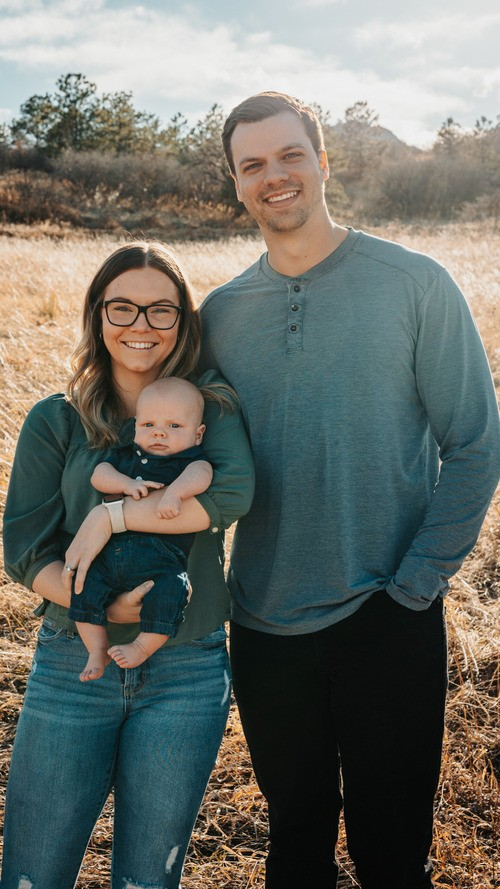

Welcome to
Axiom Church
Join us Sundays at 10a
No relationship with Jesus? Bad relationship with the Church? This is for you.
Belong before you believe ◆ No crap coffee ◆ Your kids will beg to come back ◆ Truth and grace ◆ Real people with real problems ◆ Your story matters to us ◆
What to expect
Messy people welcome.
Messy church full of messy people. Men becoming better men. Truth AND Grace.

Meet our pastor
Hey, we're the Weeces.
We moved to Leander in August 2024 to start a brand new church to help people find greater levels of community and purpose for their lives.
We want Axiom Church to be a place where anyone can belong even before they believe and have a real and authentic relationship with Jesus. We cannot wait to meet you and hear your story!
Josiah Weece
Lead Pastor
Recent messages
Keep up with Axiom.
Keep up with our most recent messages by downloading the Axiom Church App.
Join us Sunday at 10 AM.